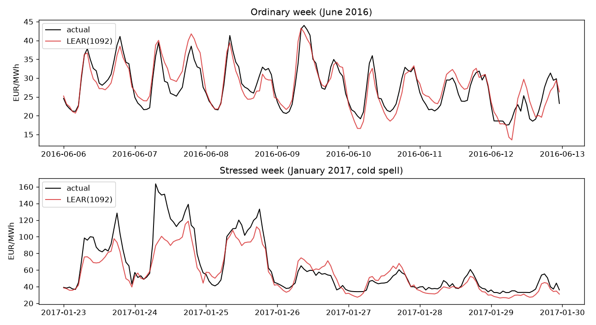
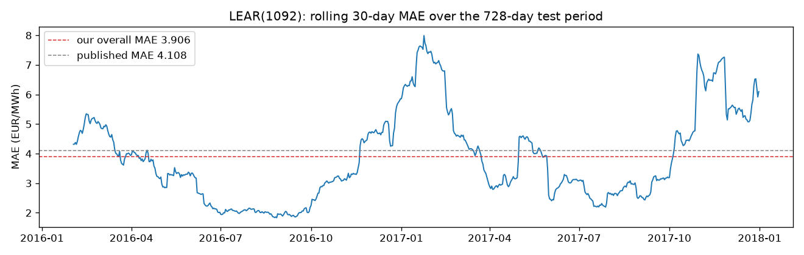

Generated 2026-07-30T13:37:38+00:00. Our reimplementation
(pred_el_prices.models.lear) run on the paper's open dataset
(Zenodo 4624805, 2012–2017), 728-day test period
(2016-01-04 to 2017-12-31), daily recalibration — against the published Table 2 values.
| model | MAE | pub. | rMAE | pub. | sMAPE % | pub. | RMSE | pub. | runtime min |
|---|---|---|---|---|---|---|---|---|---|
| LEAR56 | 4.593 | 4.619 | 0.504 | 0.506 | 17.44 | 17.6 | 8.267 | 8.122 | 4.5 |
| LEAR84 | 4.529 | 4.555 | 0.497 | 0.499 | 17.24 | 17.49 | 8.043 | 7.923 | 8.8 |
| LEAR1092 | 3.906 | 4.108 | 0.429 | 0.45 | 16.67 | 16.98 | 6.495 | 6.996 | 66.4 |
| LEAR1456 | 3.958 | 4.118 | 0.434 | 0.451 | 16.99 | 17.05 | 6.466 | 6.987 | 94.2 |
Short windows (56/84) match within 1–2% — the pipeline is faithful.
Long windows beat the published numbers by ~4–7%; the sklearn AIC computation in
LassoLarsIC was corrected (~v1.2, after the paper), and with n » p the criterion
drives regularization selection. Same algorithm, corrected implementation. rMAE uses the paper's
weekly-persistence naive. Deviation note: for windows 56/84 (samples < features) modern sklearn
requires an explicit noise-variance estimate; we use the per-hour target variance.


Context (published, same protocol): best individual DNN MAE 4.071, DNN ensemble 3.998, LEAR ensemble 3.955. Our single LEAR(1092) at 3.906 already sits below all of them — five years of library fixes quietly moved the baseline.